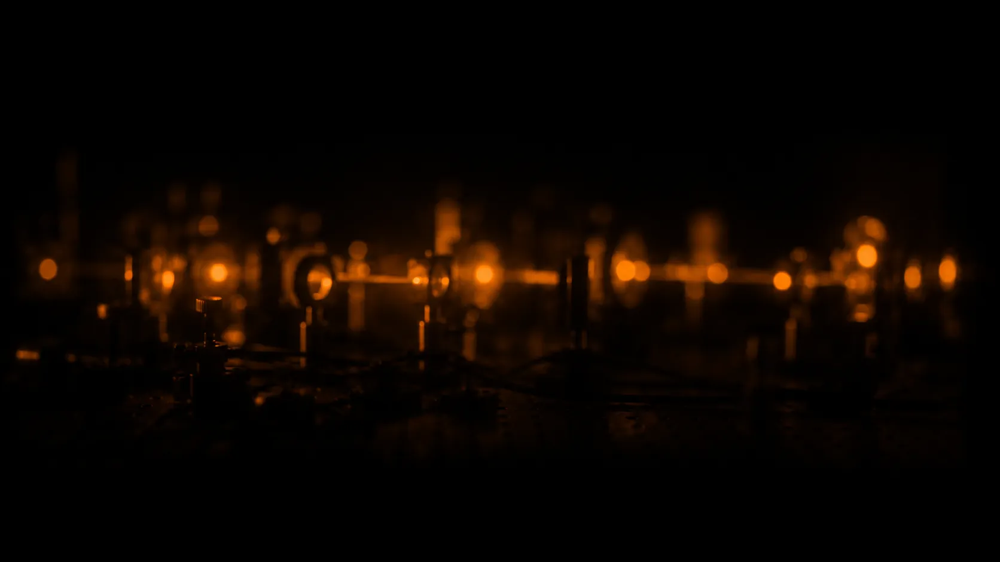
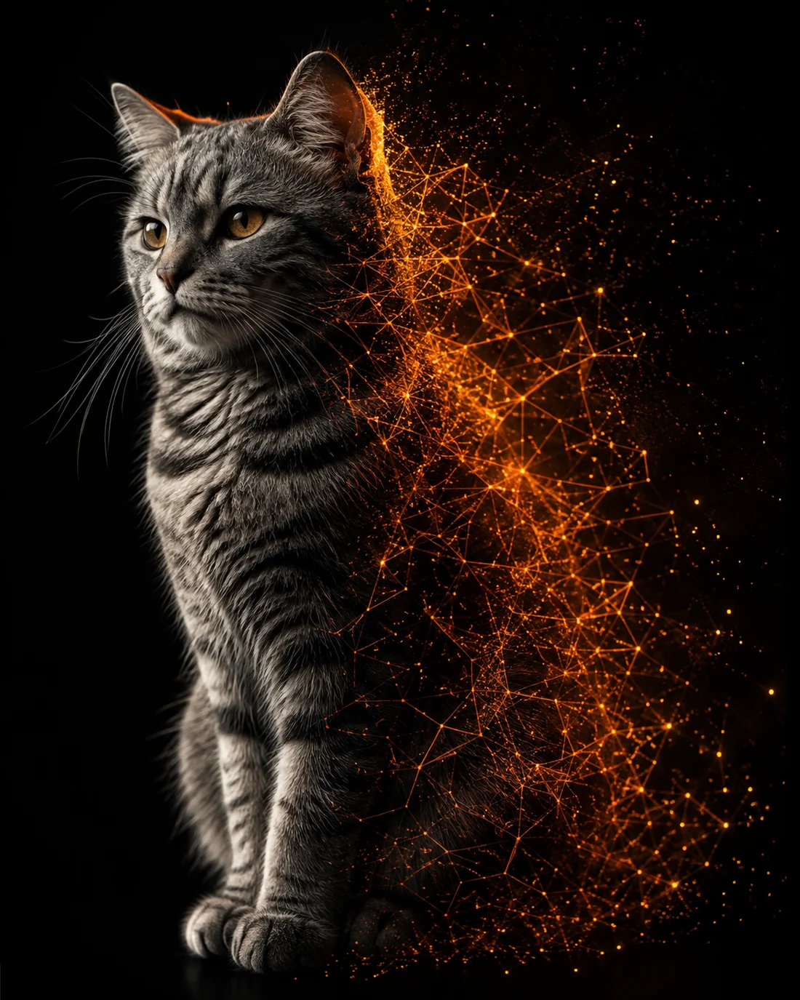
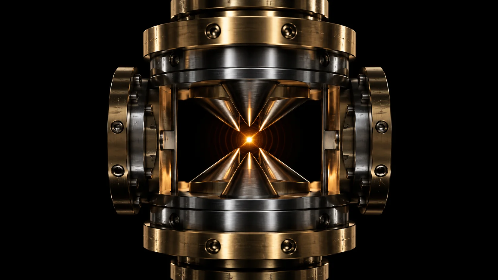
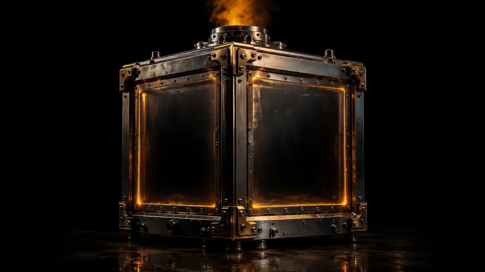

A live phase-space experiment exploring coherence, interference and the moment observation becomes reality.

Not an animation of a cat state — an actual one. Change it here and the chamber above changes with it.
An equal superposition of N coherent states on a ring in phase space. The lobes you see are the components; the ripples between them are interference, and they only exist because the cross terms are kept.
Push κ up and watch the fringes die while the lobes survive. That is decoherence: the parts stay, the betweenness goes. Negativity falls to zero and the state becomes an ordinary mixture.
Observing draws one sample from the marginal P(x) — the real distribution, not a coin flip over two labels. Repeat it and the histogram converges to the curve it came from.
Why this cat, and why 2023.

I tried liking our cat, but the feeling wasn't reciprocated. Not even slightly. One day she disappeared. To this day, we don't know if our cat (Schrödinger), is alive or dead. Elon Musk · 17 Sep 2023 · x.com
A cat named Schrödinger walked off and never resolved. It is the only Schrödinger's cat anyone has had to actually live with — an unresolved state with a name, a food bowl, and a household that stopped waiting.

What is computed and what is drawn. The line between them is the whole point.
S. Saner, O. Băzăvan, D. J. Webb, G. Araneda, D. M. Lucas, C. J. Ballance, R. Srinivas — Phys. Rev. X 16, 021049 (2026). A single trapped strontium ion, a mid-circuit measurement, and a superposition sculpted into a shape nobody had made before. “This approach gave us a tool to sculpt the quantum superposition into almost any shape.”

Sculpt the state, watch the fringes, and decide when to look. Or take one measurement right here — a real sample from the distribution above.